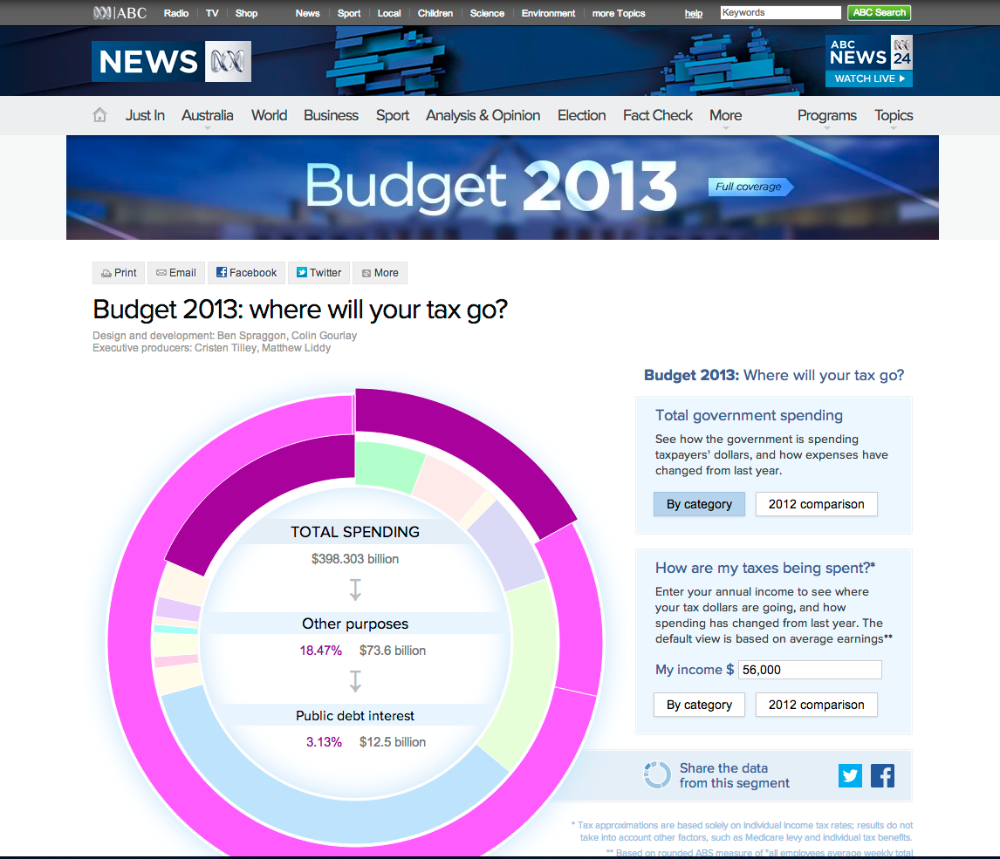
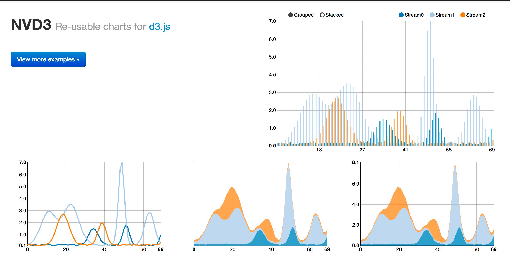
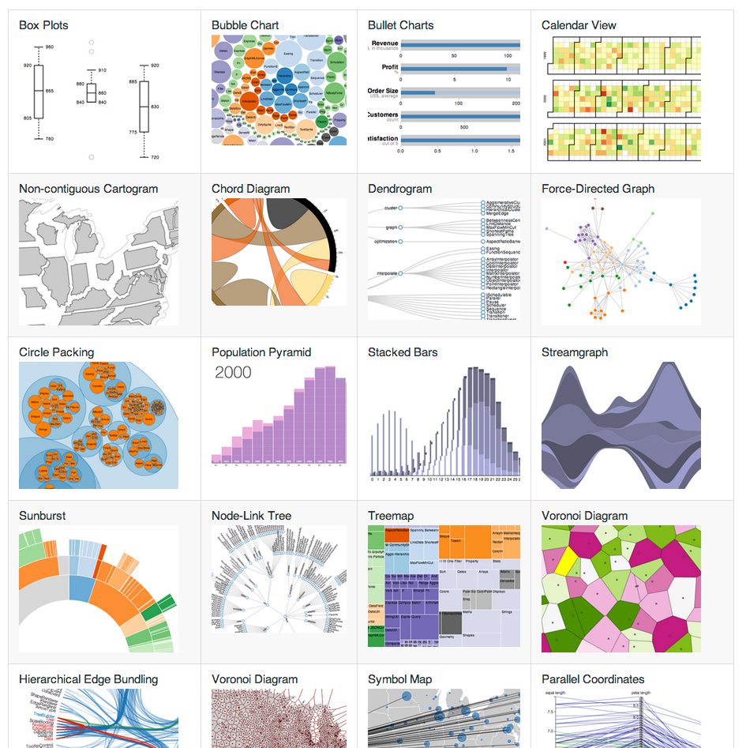
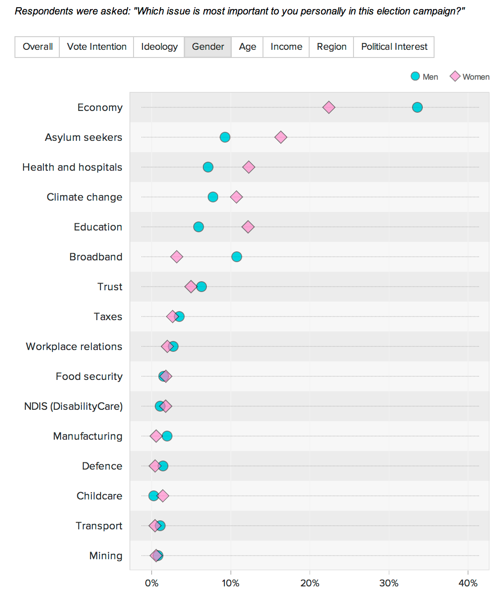
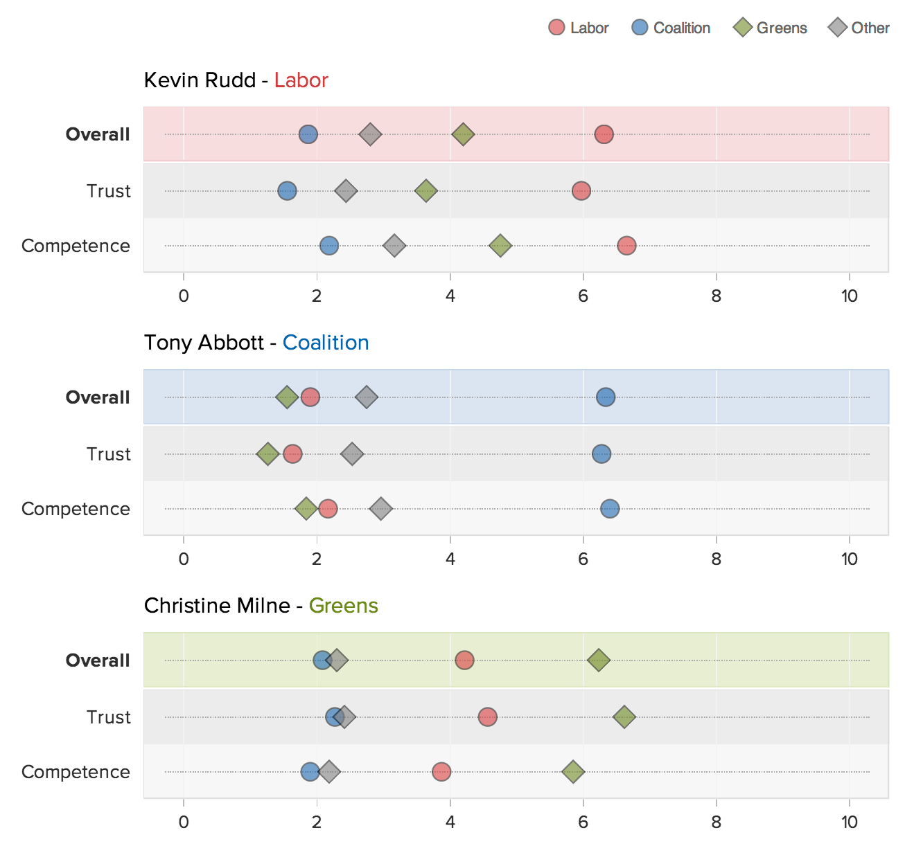
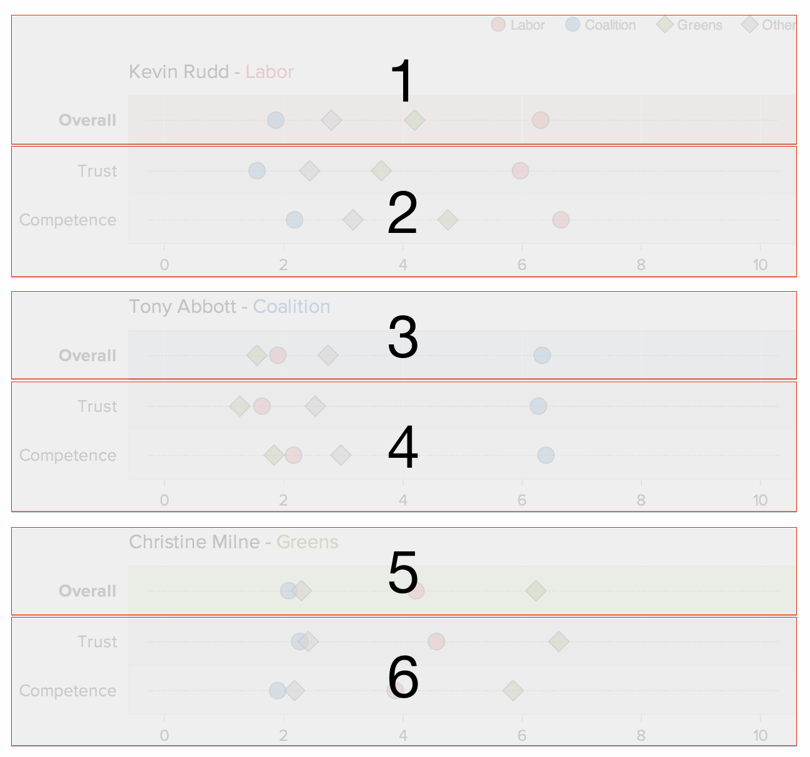
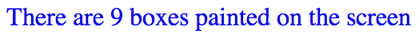

Data-Driven
Interactive Content
That's At Home On
Any Device
Interactive Storytelling, ABC News
Responsive SVG
What do we have out of the box?
viewBox
(kinda like image scaling)
NVD3
NVD3
- Pre-fabricated D3 charts
- Plug in data and go
- Responsive friendly
Customisation is hard
- Their chart types
- Their expected data format
- Their animations/transitions
- Their responsive solution
If that's all you need, great!
D3
Selections & Data
// Bind data and use it to set each element's background color
d3.selectAll('div')
.data(['red', '#00FF00', 'rgb(0,0,255)'])
.style('background-color', function(d) { return d; });
// Let the text content of each element depend on the data
d3.selectAll('p')
.data([1, 2, 3, 4, 5])
.text(function(d) { return 'Number: ' + d; });
Data (cont.)
// Bind more complex data, and use different properties
var circles = [
{ radius: 10, center: [5, 20], color: 'red' },
{ radius: 5, center: [20, 10], color: 'blue' },
{ radius: 15, center: [30, 30], color: 'green' }
];
d3.selectAll('circle')
.data(circles)
.attr('r', function(d) { return d.radius; })
.attr('cx', function(d) { return d.center[0]; })
.attr('cy', function(d) { return d.center[1]; })
.attr('fill', function(d) { return d.color; });
Join, Enter, Update & Exit
// Join
var p = d3.select('body').selectAll('p').data(data);
// Enter
p.enter().append('p');
// Update (new & existing)
p.text(function (d) { return 'Number: ' + d; });
// Exit
p.exit().remove();
D3 is also...
- Event handling & transitions
- Scale generators (quantitative, ordinal, time)
- Array, color & time utilities
- CSV/TSV fetching & formatting
- Map projections
D3 is a library, not a framework
It has no opinion on how to create charts, leading to a wild ecosystem of incompatible examples.
Irene Ros (Bocoup) & Alex Graul (formerly of The Guardian)
"...a framework for building reusable charts with d3.js"
d3.chart
// Define a new chart type: a circle chart
d3.chart('CircleChart', {
initialize: function () { /* ... */ }
});
// Create an instance of the chart on a d3 selection
var chart = d3.select('body')
.append('svg')
.attr('height', 30)
.attr('width', 400)
.chart('CircleChart');
// Render it with some data
chart.draw([4, 8, 15, 16, 23, 42]);
Initialization (1/2)
initialize: function () {
var chart = this;
chart.w = this.base.attr('width') || 200;
chart.h = this.base.attr('height') || 150;
chart.scale = d3.scale.linear().range([0, chart.w]);
/* ... */
}
Initialization (1/2)
initialize: function () {
/* ... */
// Create a 'layer' for the circles
chart.layer('circles', chart.base.append('g'), {
// Select the elements and bind the data to them
dataBind: function (data) {
chart.data = data;
chart.scale.domain([0, d3.max(data)]);
return this.selectAll('circle')
.data(data);
},
// Insert actual circles
insert: function () {
return this.append('circle');
},
// Define lifecycle events
events: {
// Paint new elements, but set their radius to 0
'enter': function() {
return this.attr('cx', function(d) {
return d * 10;
})
.attr('cy', 10)
.attr('r', 0);
},
// ...then transition them to a radius of 5
'enter:transition': function() {
return this
.delay(500)
.attr("r", 5);
},
// Before removing circles, transition
// their radius back to 0
'exit:transition': function() {
return this.duration(1000)
.attr('r', 0)
.remove();
}
}
});
}
It's all about layers
When we call draw with some data, it gets passed through each layer you've defined (lines, bars, axes, labels, etc.).
Each layer knows how to:
- Bind data
- Insert elements
- Update them
- Remove them
- Perform transitions
A chart is essentially
- Internal settings (margins, scales, etc.)
- Layers
- API of fluent methods:
chart.width(200).margin(10).circleRadius(10);
d3.chart('CircleChart', {
initialize: function () { /* ... */ },
width : function(newWidth) {
// Getter
if (!arguments.length) { return this.w; }
// Setter + side effects
this.w = newWidth;
this.base.attr('width', this.w); // svg
this.scale.range([0, this.w]); // scale
this.draw(this.data); // redraw
return this; // chaining
},
/* ... (margin, circleRadius, etc.) ... */
});
Example: scatter plot
Layers
- Background & Grid
- Plotted Points
- Legend
- Title
- Tooltips
Code
chart.areas = {
labelsXTop: chart.base.append('g').classed('OrdinalScatterPlot_labels OrdinalScatterPlot_labels-x OrdinalScatterPlot_labels-x-top', true),
labelsXBottom: chart.base.append('g').classed('OrdinalScatterPlot_labels OrdinalScatterPlot_labels-x OrdinalScatterPlot_labels-x-bottom', true),
labelsY: chart.base.append('g').classed('OrdinalScatterPlot_labels OrdinalScatterPlot_labels-y', true),
background: chart.base.append('g').classed('OrdinalScatterPlot_background', true),
gridX: chart.base.append('g').classed('OrdinalScatterPlot_grid OrdinalScatterPlot_grid-x', true),
gridY: chart.base.append('g').classed('OrdinalScatterPlot_grid OrdinalScatterPlot_grid-y', true),
border: chart.base.append('rect').classed('OrdinalScatterPlot_border', true),
points: chart.base.append('g').classed('OrdinalScatterPlot_points', true),
legend: chart.base.append('g').classed('OrdinalScatterPlot_legend', true),
title: chart.base.append('g').classed('OrdinalScatterPlot_title', true)
};
Each area has a corresponding layer
d3.chart('OrdinalScatterPlot', {
// Expected datum properties
dataAttrs: ['metric', 'value', 'series'],
// Initialisation (+ settings, areas, layers, events)
initialize: function() { /* ... */ }
// Fluent API
// - Chart Size
width: function (width, excludesDecorations) { /* ... */ },
height: function (height, excludesDecorations) { /* ... */ },
// - Metric labels (y-axis)
metricLabelsWidth: function (width, maintainsTotalWidth) { /* ... */ },
// - Control dot shape & colour (based on series)
seriesScales: function (names, colors, symbols) { /* ... */ },
// - Legend
showLegend: function (maintainsTotalHeight) { /* ... */ },
hideLegend: function (maintainsTotalHeight) { /* ... */ },
// - Title
title: function (title, subtitle) { /* ... */ },
showTitle: function (maintainsTotalHeight) { /* ... */ },
hideTitle: function (maintainsTotalHeight) { /* ... */ },
// - Value labels (x-axis)
showLabelsX: function (maintainsTotalHeight) { /* ... */ },
hideLabelsX: function (maintainsTotalHeight) { /* ... */ },
showLabelsXTop: function (maintainsTotalHeight) { /* ... */ },
hideLabelsXTop: function (maintainsTotalHeight) { /* ... */ },
showLabelsXBottom: function (maintainsTotalHeight) { /* ... */ },
hideLabelsXBottom: function (maintainsTotalHeight) { /* ... */ },
formatLabelsX: function (formatFn) { /* ... */ },
valueDomain: function(min, max) { /* ... */ },
// - Tooltips
formatTooltips: function (formatFn) { /* ... */ },
_defaultTooltipFormat: function (d) { /* ... */ },
// - Dot animation toggle
animated: function (isAnimated) { /* ... */ },
// - Linked chart behaviours
linkSymbiote: function(symbiote) { /* ... */ },
// Fluent API internal functions
// - Scales
_updateXScale: function () { /* ... */ },
_updateYScale: function () { /* ... */ },
// - Area size measurement
_effectiveXDecorationsWidth: function () { /* ... */ },
_effectiveLeftDecorationsWidth: function () { /* ... */ },
_effectiveRightDecorationsWidth: function () { /* ... */ },
_effectiveYDecorationsHeight: function () { /* ... */ },
_effectiveTopDecorationsHeight: function () { /* ... */ },
_effectiveBottomDecorationsHeight: function () { /* ... */ },
_effectiveLegendHeight: function () { /* ... */ },
_effectiveTitleHeight: function () { /* ... */ },
_effectiveLabelsXTopHeight: function () { /* ... */ },
_effectiveLabelsXBottomHeight: function () { /* ... */ },
// - Area size/position management
_updateAreasDisplay: function () { /* ... */ }
});
Filtered Data
The same chart can be used to display
different sets of data.
Toggling components
&
combining charts
This is actually 6 charts
This is actually 6 charts
First we define a function that constructs a chart with all the shared properties/defaults
function makeChart() {
return d3.select('#chart')
.append('div')
.append('svg')
.chart('OrdinalScatterPlot')
.width(700)
.height(44, true)
.valueDomain(0, 10)
.hideLegend()
.hideLabelsX()
.animated(true);
}
Then use it as a starting point for each part
makeChart().title('Kevin Rudd', 'Labor').showLegend(), // 1
makeChart().height(88, true).showLabelsX(), // 2
makeChart().title('Tony Abbott', 'Coalition'), // 3
makeChart().height(88, true).showLabelsX(), // 4
makeChart().title('Christine Milne', 'Greens'), // 5
makeChart().height(88, true).showLabelsX() // 6
It's responsive-ready
- We can resize the chart manually, and show/hide components
- Let's do that based on viewport size:
window.addEventListener('resize', function () { var width = $(chart.base.node().parentNode).width(); chart.width(width); }, false);
window.addEventListener('resize', function () {
if (chart.width() <= 480) {
chart.showLabelsXTop();
} else {
chart.hideLabelsXTop();
}
}, false);
It's effective, but...
- We've built a lovely configurable chart
- All the responsive logic lives outside
d3.chart.base
- Also created by Miso
- Only provides
width/heightmethods - But adds a new concept:
Modes
Defining Modes
d3.chart('BaseChart').extend('BoxesChart', {
modes: {
mobile: function () {
return Modernizr.mq('only all and (max-width: 480px)');
},
tablet: function () {
return Modernizr.mq('only all and (min-width: 481px) and (max-width: 768px)');
},
desktop: function () {
return Modernizr.mq('only all and (min-width: 769px)');
}
},
...
Using Modes
this.layer('boxes', this.base.append('g'), {
modes: ['desktop', 'tablet'],
dataBind: function(data) { /* ... */ },
insert: function() { /* ... */ },
events: {
merge: function() {
var selection = this,
chart = selection.chart(),
mode = chart.mode();
if (mode === 'tablet') {
selection.attr('width', 10).attr('height', 10);
} else if (mode === 'desktop') {
selection.attr('width', 50).attr('height', 50);
}
selection.style('fill', 'blue').style('opacity', '0.5');
selection.attr('y', chart.height() / 2).attr('x', function(d) {
return chart.xScale(d);
});
}
}
});
This layer won't appear in "mobile" mode
Desktop

Tablet
Mobile
It's Automated
The responsive base is already bound to viewport size & orientation change events.
- It checks which mode it's now in
- It then renders/destroys layers by itself
It also broadcasts custom events whenever the mode changes, so you can bind handlers that aren't specific to a particular layer.
Applications
- Toggling features
- Repositioning legends
- Inverting scales
- Tweaking touch target size
- Reducing complexity
Beyond media queries
Modes don't need to be based on viewport dimensions
d3.chart('BaseChart').extend('BoxesChart', {
modes: {
mobile: function() {
return (window.location.hostname.indexOf('mobile.') === 0);
},
www: function() {
return (window.location.hostname.indexOf('www.') === 0);
}
},
...
www could be fixed; mobile could be fluid
- d3.charts are designed to be extended
- Start with your own base chart
- Pick modes that suit your content
- Depend on them as you add complexity
Appendix A
Full Screen
Got a big display? Use It!
if (document.body.requestFullscreen ||
document.body.mozRequestFullScreen ||
document.body.webkitRequestFullscreen
) {
$('')
.on('click', function(e) {
var root = $interactive.get(0);
if (root.requestFullscreen) { root.requestFullscreen(); }
else if (root.mozRequestFullScreen) { root.mozRequestFullScreen(); }
else if (root.webkitRequestFullscreen) { root.webkitRequestFullscreen(); }
e.preventDefault();
})
.appendTo($interactive);
}
.interactive:full-screen {
width: 100%;
height: 100%;
overflow-y: scroll;
}
Appendix B
Touching SVGs
-webkit-touch-callout: none;
-webkit-user-select: none;
-khtml-user-select: none;
-moz-user-select: none;
-ms-user-select: none;
user-select: none;
Appendix C
Debouncing
Debounce
- Triggering events on window resize can be costly.
- Limit the number of times our handler is called.
- Debouncing the event handler is a great way to do this.
function debounce(fn, wait) {
var timeout;
return function() {
var context = this, // preserve context
args = arguments, // preserve arguments
later = function() { // define a function that:
timeout = null; // * nulls the timeout (GC)
fn.apply(context, args); // * calls the original fn
};
// (re)set the timer which delays the function call
clearTimeout(timeout);
timeout = setTimeout(later, wait);
};
}
Using debounce, the handler will now only run once the window's resize event stops getting hammered for 250ms:
window.addEventListener("resize", debounce(function () {
var width = $(chart.base.node().parentNode).width();
chart.width(width);
}, 250), false);
Thanks
Links
- d3.chart: http://misoproject.com/d3-chart/
- d3.chart.base: https://github.com/iros/d3.chart.base